Вопросы и ответы
Если у вас еще остались вопросы, можете задать нам, и наши консультанты ответят анонимно в любое время суток
Лечите ли вы нехимические зависимости?
«Самое ценное – это обретённая свобода и возможность начать всё с чистого листа. Анонимность лечения позволила мне избежать ненужных переживаний и сосредоточиться на реабилитации. После выписки я чувствую себя уверенно и готов к вызовам жизни без наркотиков! Самое ценное – это обретённая свобода и возможность начать всё с чистого листа. Анонимность лечения позволила мне избежать ненужных переживаний и сосредоточиться на реабилитации. После выписки я чувствую себя уверенно и готов к вызовам жизни без наркотиков!»
Отвечает на вопрос:

Калюжная марина александровна
Директор клиники, психиатр-нарколог
24
Лечите ли вы нехимические зависимости?
«Самое ценное – это обретённая свобода и возможность начать всё с чистого листа. Анонимность лечения позволила мне избежать ненужных переживаний и сосредоточиться на реабилитации. После выписки я чувствую себя уверенно и готов к вызовам жизни без наркотиков! Самое ценное – это обретённая свобода и возможность начать всё с чистого листа. Анонимность лечения позволила мне избежать ненужных переживаний и сосредоточиться на реабилитации. После выписки я чувствую себя уверенно и готов к вызовам жизни без наркотиков!»
Отвечает на вопрос:
Калюжная марина александровна
Директор клиники, психиатр-нарколог
24
Лечите ли вы нехимические зависимости?
«Самое ценное – это обретённая свобода и возможность начать всё с чистого листа. Анонимность лечения позволила мне избежать ненужных переживаний и сосредоточиться на реабилитации. После выписки я чувствую себя уверенно и готов к вызовам жизни без наркотиков! Самое ценное – это обретённая свобода и возможность начать всё с чистого листа. Анонимность лечения позволила мне избежать ненужных переживаний и сосредоточиться на реабилитации. После выписки я чувствую себя уверенно и готов к вызовам жизни без наркотиков!»
Отвечает на вопрос:
Калюжная марина александровна
Директор клиники, психиатр-нарколог
24
Лечите ли вы нехимические зависимости?
«Самое ценное – это обретённая свобода и возможность начать всё с чистого листа. Анонимность лечения позволила мне избежать ненужных переживаний и сосредоточиться на реабилитации. После выписки я чувствую себя уверенно и готов к вызовам жизни без наркотиков! Самое ценное – это обретённая свобода и возможность начать всё с чистого листа. Анонимность лечения позволила мне избежать ненужных переживаний и сосредоточиться на реабилитации. После выписки я чувствую себя уверенно и готов к вызовам жизни без наркотиков!»
Отвечает на вопрос:
Калюжная марина александровна
Директор клиники, психиатр-нарколог
24
Лечите ли вы нехимические зависимости?
«Самое ценное – это обретённая свобода и возможность начать всё с чистого листа. Анонимность лечения позволила мне избежать ненужных переживаний и сосредоточиться на реабилитации. После выписки я чувствую себя уверенно и готов к вызовам жизни без наркотиков! Самое ценное – это обретённая свобода и возможность начать всё с чистого листа. Анонимность лечения позволила мне избежать ненужных переживаний и сосредоточиться на реабилитации. После выписки я чувствую себя уверенно и готов к вызовам жизни без наркотиков!»
Отвечает на вопрос:
Калюжная марина александровна
Директор клиники, психиатр-нарколог
24
Лечите ли вы нехимические зависимости?
«Самое ценное – это обретённая свобода и возможность начать всё с чистого листа. Анонимность лечения позволила мне избежать ненужных переживаний и сосредоточиться на реабилитации. После выписки я чувствую себя уверенно и готов к вызовам жизни без наркотиков! Самое ценное – это обретённая свобода и возможность начать всё с чистого листа. Анонимность лечения позволила мне избежать ненужных переживаний и сосредоточиться на реабилитации. После выписки я чувствую себя уверенно и готов к вызовам жизни без наркотиков!»
Отвечает на вопрос:
Калюжная марина александровна
Директор клиники, психиатр-нарколог
24
Больше, чем реабилитация
— это медицина
Зависимость — хроническое заболевание. Мы не обещаем «вылечить навсегда», но обеспечиваем устойчивую ремиссию и возврат к полноценной жизни
Клиника доктора Калюжной — это не обычный реабилитационный центр. У нас в штате работают психиатр-нарколог, невролог, терапевт, клинические психологи и аддиктологи. Это не приглашённые специалисты, а постоянная команда, которая ведёт каждого пациента от первого звонка до завершения постлечебной программы
Наша авторская программа медико-социальной реабилитации охватывает четыре сферы: биологическую, психологическую, социальную и духовную. Всё — в одном месте, как единый непрерывный процесс. Не нужно переводить близкого из одного учреждения в другое
«Наша задача — не просто снять острое состояние, а создать условия для достижения устойчивой ремиссии и улучшения качества жизни человека и его близких»
Калюжная Марина Александровна
Стаж работы: 17 лет
01
наши Врачи в штате
Психиатр-нарколог, невролог, терапевт, аддиктолог, клинический психолог и диетолог — все в постоянном штате
02
Авторская программа
Собственная интегративная модель медико-социальной реабилитации, разработанная дипломированными специалистами
03
Полная анонимность
Данные не передаются в госорганы. Никакой постановки на наркологический учёт. Никаких сведений по месту работы
04
Гарантия по договору
Если после полного курса произошёл срыв — повторное лечение проводится бесплатно. Это зафиксировано в договоре
Врачи, которые
работают у нас в
штате
Не приглашённые специалисты — постоянная команда с дипломами и подтверждённым стажем


Чем мы отличаемся от обычного рехаба
В большинстве частных центров один зависимый лечит другого по программам из книжек. Мы устроены иначе.
Обычный рехаб
- Консультанты без медицинского образования
- Чужие программы 12 шагов как единственная основа
- Нет ежедневного медицинского сопровождения
- Изолированный центр без медицинской лицензии
- Работа только с пациентом
- Выписка без дальнейшей поддержки
выбор сотен людей, которые уже начали жить счастливо
Клиника доктора Калюжной
- Дипломированные врачи в штате: психиатр-нарколог, невролог, терапевт
- Авторская программа медико-социальной реабилитации
- Ежедневные анализы, врачебные обходы, подбор препаратов
- Медицинское учреждение, лицензия Минздрава № Л041-01126-23/01066181
- Работа со всей семейной системой — семейные сессии, работа с созависимостью
- ПЛП — постлечебная программа сопровождения
Путь от обращения до устойчивой ремиссии
Медико-социальная реабилитация: четыре сферы
Интегративная программа, разработанная штатными специалистами клиники. Синтез доказательных методик, адаптированных под каждого пациента индивидуально
Биологическая сфера
Медицинское восстановление
- Детоксикация, снятие абстинентного синдрома
- Медикаментозное сопровождение в постабстинентном периоде
- Ежедневные анализы и врачебные обходы
- Восстановление работы внутренних органов
- Диетотерапия, физическая реабилитация
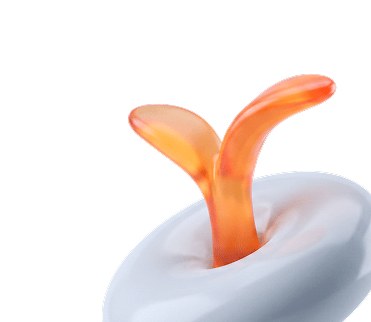
Психологическая сфера
Психотерапия
- Индивидуальная и групповая психотерапия
- КПТ, гештальт-подход, экзистенциальный анализ
- Психодиагностика, психокоррекция
- Арт-терапия, психообразовательные лекции
- Йога, телесно-ориентированные практики
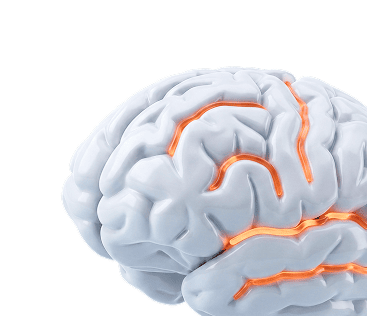
Социальная сфера
Социализация
- Элементы терапевтического сообщества
- Педагогика, формирование бытовых навыков
- Ресоциализация, возвращение в общество
- Помощь в трудоустройстве
- Постлечебная программа сопровождения (ПЛП)
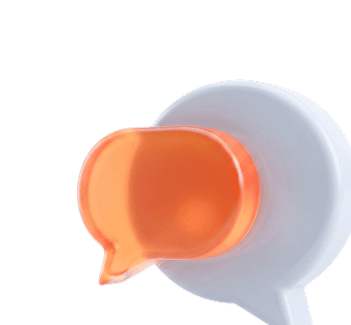
Духовная сфера
Ценности и смыслы
- Работа с жизненными ценностями и смыслами
- Пропаганда здорового образа жизни
- Восстановление морально-нравственных ориентиров
- Работа с целеполаганием и мотивацией
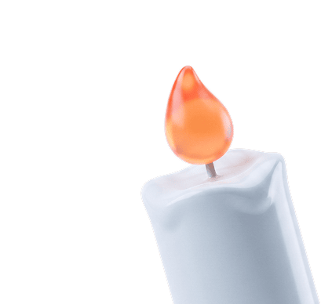
Зависимость затрагивает всю семью. Мы работаем с каждым
Химическая зависимость — системная болезнь, которая меняет поведение и отношения всей семьи. Лечить только пациента, не работая с его окружением — значит возвращать человека в ту же среду, которая поддерживала болезнь.
Мы включаем семью в процесс реабилитации с первых недель — это обязательная часть нашей программы, а не дополнительная услуга
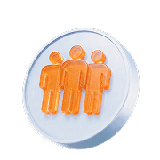
Семейные сессии с психотерапевтом
Совместная работа с пациентом и близкими для восстановления здоровых отношений
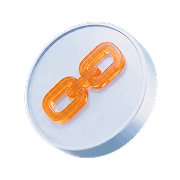
Работа с созависимостью
Психолог помогает родственникам понять свои паттерны и выйти из деструктивной роли
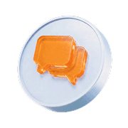
Эффективное взаимодействие
Как говорить с зависимым, что делать при угрозе срыва, как не стать частью болезни
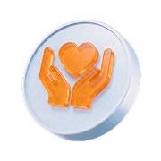
Поддержка на этапе ПЛП
Сопровождение семьи после выписки пациента: как сохранить ремиссию дома
Что делать, если человек не признаёт болезнь?
90% зависимых не признают свою болезнь. Принудительное лечение запрещено законом РФ — и оно не работает. Но сформировать у человека искреннее желание лечиться — можно
Мы применяем метод психологической интервенции. Выезд дипломированных специалистов, мягкая профессиональная беседа без давления и угроз. В 92% случаев пациент соглашается на лечение в день визита
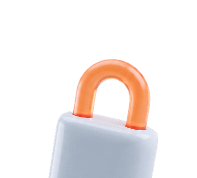
Конфиденциально и Без давления
Анонимный выезд и мотивационная беседа без принуждения
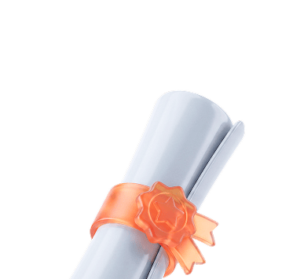
Дипломированные специалисты
Психологи с опытом работы с отрицанием зависимости
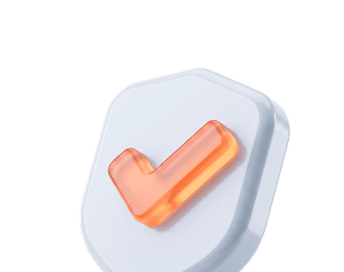
92% — высокий результат
Пациент соглашается на лечение в день визита
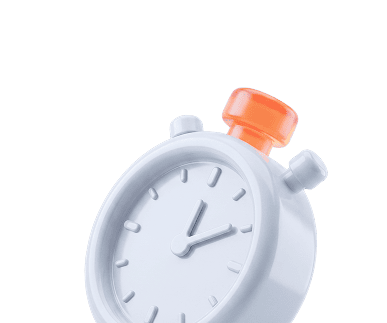
Круглосуточный Выезд
В любое время суток, в любой район города
Детско-подростковое отделение
Работа с детьми и подростками требует отдельного подхода. Наши специалисты имеют профильное образование и опыт именно в этом направлении
Мы работаем с подростковой зависимостью (алкоголь, ПАВ, интернет, игромания), девиантным поведением, а также оказываем психологическую и психиатрическую помощь детям с особенностями развития. Обязательная составляющая — работа с родителями
Подростковая зависимость
Алкоголь, ПАВ, никотин — ранняя диагностика и работа с причинами
Игровая и интернет-зависимость
Поведенческие зависимости у детей и подростков
Девиантное поведение
Агрессия, замкнутость, нарушения социализации — коррекция с психологом
Работа с родителями
Как выстроить отношения с ребёнком и стать частью его восстановления
Среда, В которой возвращаются силы
Домашняя атмосфера, медицинская инфраструктура и безопасное пространство без доступа к ПАВ
Государственный диспансер vs клиника КДК
- Анонимность
- Условия проживания
- Программа лечения
- Специалисты
- Поддержка после выписки
Стандартные условия и узкий функционал
Государственный диспансер
- Постановка на учёт. Ограничения на права и работу.
- Переполненные палаты, старый ремонт, скудное меню.
- Только медикаменты. Психологической работы нет.
- Только нарколог. Узкая специализация.
- Выписка «в никуда». Срыв в первые недели.
комфорт и широкий функционал реабилитации
Клиника доктора калюжной
- 100% анонимно. Данные не передаются, на учёт не ставим.
- 2-4-местные палаты, кондиционер, матрасы, питание, спортзал, баня.
- Авторская программа медико-социальной реабилитации + медикаменты
- Штатные врачи, психологи, аддиктологи, диетолог.
- ПЛП, кураторы 24/7, помощь в трудоустройстве.
ПЛП — сопровождение после выписки
Выписка — не конец программы. Первые месяцы после возвращения домой — самый уязвимый период. Наши кураторы остаются рядом.
01
персональный куратор
Постоянный специалист на связи 24/7 — звонок при любом тревожном состоянии
02
Регулярные сессии
Плановые встречи с психологом для отслеживания динамики и профилактики срыва
03
Помощь в поиске работы
Поддержка в поиске работы и адаптации к рабочей среде
04
Реагирование при угрозе срыва
Немедленное подключение специалиста — до того, как произошёл сры
05
Продолжение семейной работы
Сессии с близкими для сохранения здоровой обстановки дома
Анонимный тест
Проверьте, нужна ли помощь
Короткий анонимный тест поможет оценить ситуацию и понять, стоит ли обратиться к специалисту. Регистрация не нужна
Главный врач
Психиатр-нарколог со стажем более 17 лет
Калюжная Наталья Владимировна
Автор методики медико-социальной реабилитации зависимых. Более 20 лет опыта работы с химической зависимостью. Автор научных публикаций и образовательных программ для специалистов в области наркологии и психотерапии
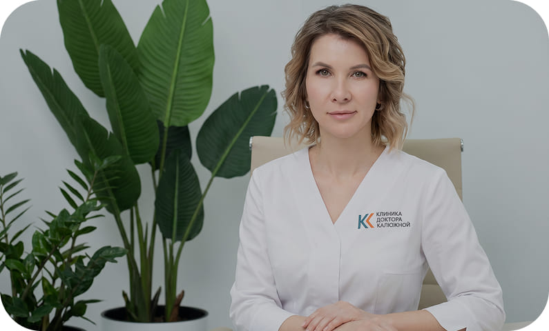
Смотреть обращение (2:13)Пакетные программы реабилитации
Фиксированная стоимость без скрытых платежей. Все медикаменты, питание и работа специалистов включены
Базовый курс
От 3500 ₽/сутки
Стационарное лечение с медицинским сопровождением
- Проживание в 4-местной палате
- 4-разовое питание
- Медикаментозное снятие абстиненции
- Групповые занятия по авторской программе
- Ежедневные врачебные обходы
- Наблюдение персонала 24/7
От 5000 ₽/сутки
Полная авторская программа медико-социальной реабилитации
- Проживание в 2-местной палате
- Индивидуальное меню диетолога
- Индивидуальные сессии с психотерапевтом
- Авторская программа: КПТ, гештальт, арт-терапия
- Семейные сессии с психотерапевтом
- Полный курс ресоциализации и ПЛП
- Гарантия от срыва по договору
VIP-программа
От 9500 ₽/сутки
Индивидуальный подход, максимальный комфорт и конфиденциальность
- Одноместный VIP-люкс
- Ежедневная личная психотерапия
- Персональный куратор 24/7
- Полная конфиденциальность
- Доступ к SPA и расширенной спортивной инфраструктуре
- Долгосрочное VIP-сопровождение в рамках ПЛП